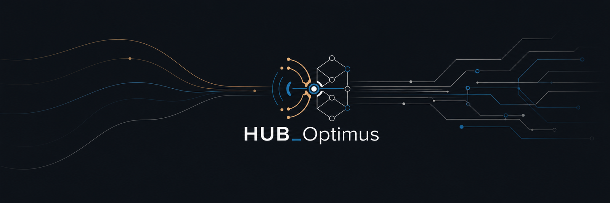

Source type
external-source
Capture → structure → review → hand off
A local browser prototype for turning operator-provided material into a reviewable structured draft. It does not run the Python CLI or a Semantic Engine.
Local draft · human review required
Scope: organize submitted material into an editable draft, preserve source provenance and uncertainty, then hand the draft to a separately controlled runtime only when an operator chooses to do so.
Paste a URL or source text. Operator records provenance, keeps submitted claims separate from corroboration, and prepares an editable local draft. It does not verify truth, infer motives, score risk, or execute the Semantic Engine.
Used for controlled URL intake. If the source blocks access, paste the article text below.
Automatic classification is conservative. Select an explicit type here when the operator has a more accurate classification.
When text and a URL are both supplied, the URL attribution is recorded as operator-provided and unverified; the URL is not fetched automatically.
Waiting for input.
Provide source material to prepare a structured draft for human review.
Prepare a draft to unlock memory and sharing.
This technical view uses the primary intake above. Its source projection is read-only here so URL, text, and source type cannot diverge from the material used to prepare the draft.
external-source
not provided
not provided
No source normalized yet.
Capture what is asserted. Do not treat submitted claims as verified facts.
Capture support, contradiction, limitations, and source type.
Copy this JSON into the local backend workflow when operating inside the secured environment.
{}
Generate a copy/paste command for a separately controlled local runtime. The command validates the case JSON, checks local API health, saves the response, validates that analysis_result exists, and prints JSON ready for the output viewer. Operator does not call `/analyze` or claim that an engine run occurred.
Build JSON first, then generate the local analyze command.
Paste the JSON response returned by HUB_Optimus `/analyze`, or render the current normalized case as a draft output before backend analysis. Draft output is not a backend run.